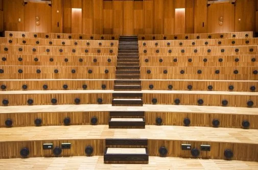

Albano háskólasvæðið
Nýtt háskólahverfi fyrir Stokkhólmsháskóla og KTH — kennsluhús, rannsóknarrými og stúdentaíbúðir í vistvottuðu borgarumhverfi.
Albano er eitt stærsta uppbyggingarverkefni háskólanna í Stokkhólmi og var skipulagt sem „vistkerfishverfi“ þar sem byggingar, almenningsrými og gróður vinna saman. Hildur starfaði að verkefninu sem arkitekt hjá Arkitema, meðal annars að hönnun kennslu- og rannsóknarbygginga.
Verkefnið kenndi margt sem fylgir stofunni enn: samhæfingu stórra hagsmunahópa, sjálfbærnivottanir og hvernig almannarými á milli húsa ráða jafnmiklu um upplifun og húsin sjálf.

